Berdasarkan transaksi KUPVA BB, jenis valuta asing yang paling banyak dilakukan pembelian adalah mata uang Dollar USA (USD) sebesar 57,78%, Dollar Singapura (SGD) sebesar 17,92%, Jepang Yen (JPY) sebesar 4,99%, Euro (EUR) 3,61%, Dollar Australia (AUD) sebesar 2,96%, dan Ringgit Malaysia (MYR) sebesar 2,33%. Pada triwulan III 2022, nilai transaksi KUPVA BB di Jawa Barat masih menunjukkan adanya kenaikan. Total transaksi penjualan dan pembelian Uang Kertas Asing (UKA) sebesar Rp1.102,26 miliar atau mengalami kenaikan sebesar 64,48% (yoy). Peningkatan nilai transaksi KUPVA BB tersebut disebabkan mulai pulihnya aktivitas perekonomian dengan dibukanya kegiatan Haji, Umroh, Pariwisata dan meningkatnya program tugas belajar di luar negeri.
Sistem Pembayaran dan Pengelolaan Uang Rupiah
Normalisasi aktivitas ekonomi dan masyarakat pasca HBKN Idul Fitri di tengah peningkatan inflasi, telah mengurangi kebutuhan masyarakat dalam menggunakan uang kartal, sehingga pada triwulan III 2022 terjadi penurunan aliran uang kartal keluar (outflow) yang lebih besar.
-6,55%
Triwulan III 2022
-7,42%
Tw II 2022
6,67%
Triwulan III 2022
11,92%
Tw II 2022
Rp10,4T
Triwulan III 2022
Rp7,3T
Tw II 2022
Rp8,18T
Triwulan III 2022
Rp5,97T
Tw II 2022
17.283 lbr
2022*
33.839 lbr
2021
Aktivitas Pengelolaan Uang Rupiah (PUR) atau transaksi pembayaran tunai di Bank Indonesia dapat dipantau melalui beberapa indikator.
"
Pada triwulan III 2022, terjadi perlambatan pertumbuhan transaksi menggunakan BI-RTGS1 di wilayah Jawa Barat.
Upaya Menjaga Kelancaran Pengedaran Uang Rupiah
Kantor Perwakilan Bank Indonesia Provinsi Jawa Barat terus memperkuat koordinasi dengan instansi terkait sebagai upaya mengurangi peredaran uang palsu
Bank Indonesia senantiasa berupaya memastikan kebutuhan uang kartal masyarakat dapat tersedia dalam jumlah yang cukup, termasuk jenis dan pecahannya.
Dalam rangka mensukseskan penggunaan Sistem Pembayaran Non Tunai, Bank Indonesia terus mendorong peningkatan transaksi sistem pembayaran non tunai di Indonesia.
PERKEMBANGAN SISTEM PEMBAYARAN DI JAWA BARAT
×Pengelolaan Uang Rupiah (PUR)
Jumlah aliran uang keluar dari Bank Indonesia ke perbankan (outflow), jumlah aliran uang masuk dari perbankan ke Bank Indonesia (inflow), serta kegiatan pemusnahan Uang Tidak Layak Edar (UTLE) dan jumlah temuan uang palsu merupakan indikator yang paling sering digunakan.
Aliran Uang Masuk/Keluar (Inflow/ Outflow)
Perkembangan Inflow dan Outflow Uang Kartal (Rp Triliun)

Pertumbuhan jumlah agen Layanan Keuangan Digital (LKD) pada triwulan III 2022 mengalami penurunan seiring dengan penurunan transaksi LKD yang cukup dalam.
Jumlah Agen LKD

Transaksi LKD

Uang Tidak Layak Edar (UTLE)
Dalam menjalankan tugas pengelolaan uang Rupiah, Bank Indonesia senantiasa menjaga kecukupan jumlah dan kualitas uang kartal yang beredar di masyarakat melalui kebijakan Clean Money Policy.
Perkembangan Pemusnahan UTLE di Jawa Barat

Temuan Uang Palsu
Temuan uang palsu di Jawa Barat sejak Januari s.d. September 2022 sebanyak 17,283 lembar atau 41,2% dari temuan uang palsu pada tahun 2021
Perkembangan Temuan uang Palsu
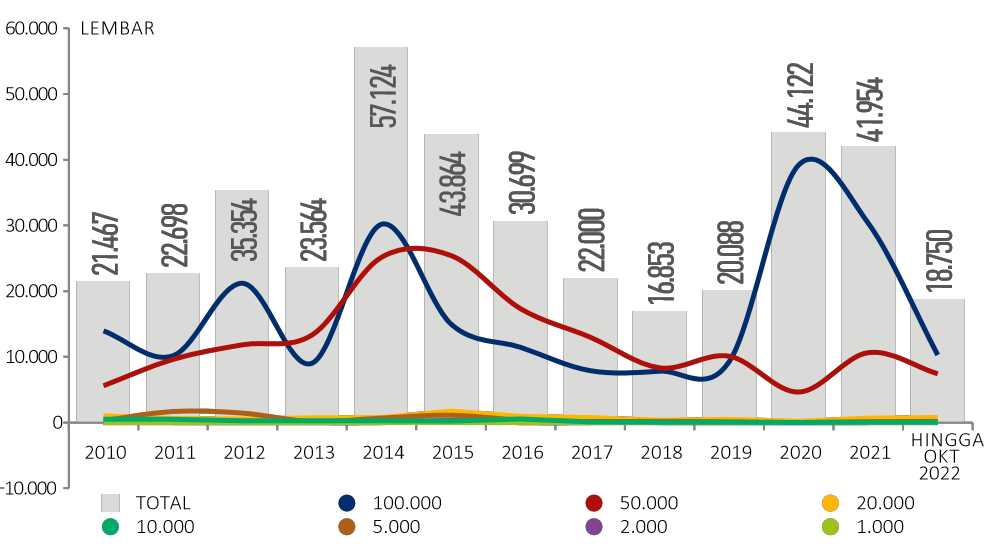Peta Sebaran Temuan uang Palsu
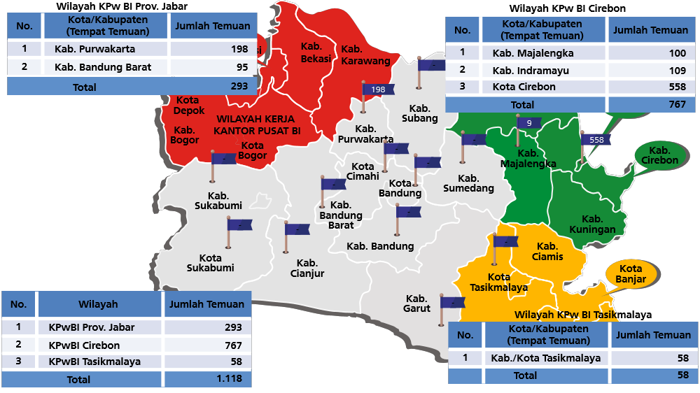Perkembangan Transaksi RTGS Jawa Barat - Nominal
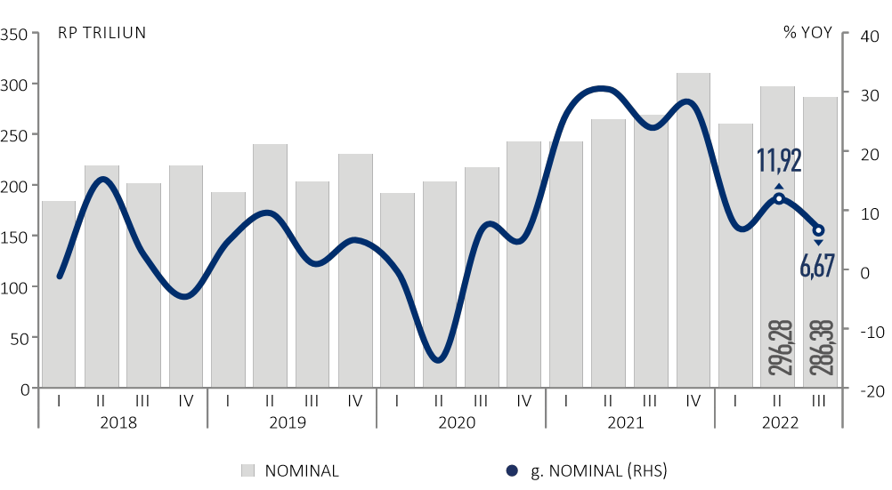Perkembangan Transaksi RTGS Jawa Barat - Volume
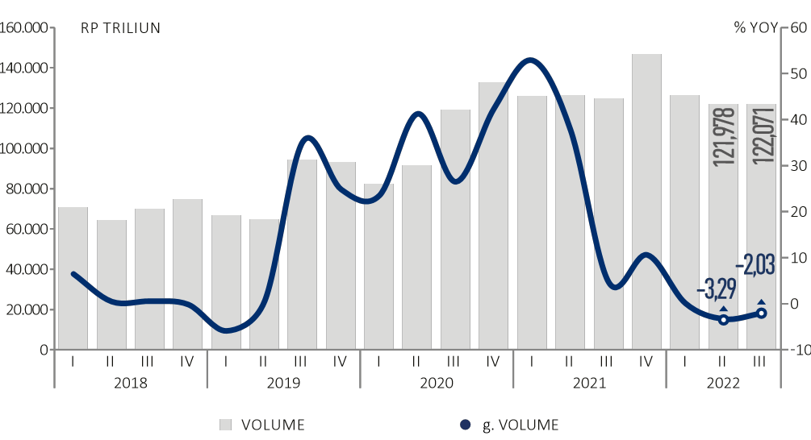Transaksi Sistem Pembayaran
×Transaksi Melalui Bank Indonesia – Real Time Gross Settlement
Pada triwulan III 2022, terjadi perlambatan pertumbuhan transaksi menggunakan BI-RTGS1 di wilayah Jawa Barat.
Transaksi Sistem Kliring Nasional Bank Indonesia
Transaksi melalui Sistem Kliring Nasional Bank Indonesia (SKNBI) di Jawa Barat pada triwulan III 2022 mengalami kontraksi sebesar 6,55% dan menunjukkan perbaikan dari periode triwulan II 2022 yang terkontraksi sebesar 7,42% (yoy).
Perkembangan Transaksi Kliring Jawa Barat - Nominal

Perkembangan Transaksi Kliring Jawa Barat - Volume

Alat Pembayaran Menggunakan Kartu (APMK) dan Uang Elektronik (UE)
Normalisasi aktivitas ekonomi masyarakat pasca HBKN Idul Fitri juga mempengaruhi penggunaan APMK menggunakan Kartu ATM Debit yang tercatat kontraksi pada triwulan III 2022, sementara Kartu Kredit tercatat mengalami peningkatan seiring adanya kebijakan relaksasi telat dan minimum bayar Kartu Kredit. Volume dan nominal transaksi Uang Elektronik (UE) pada triwulan III 2022 tercatat melambat.
Perkembangan Nominal Transaksi APMK – ATM Debit

Perkembangan Volume Transaksi APMK – ATM Debit

Perkembangan Nominal Transaksi APMK-Kredit
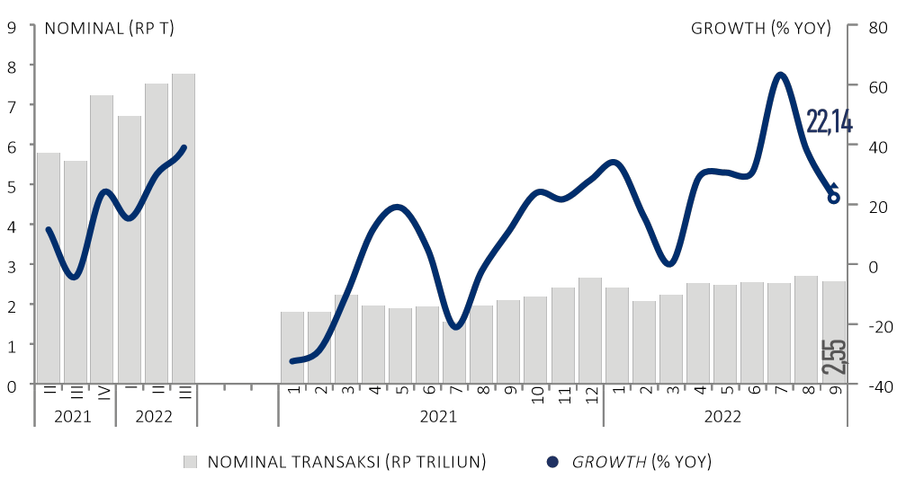Perkembangan Volume Transaksi APMK-Kredit
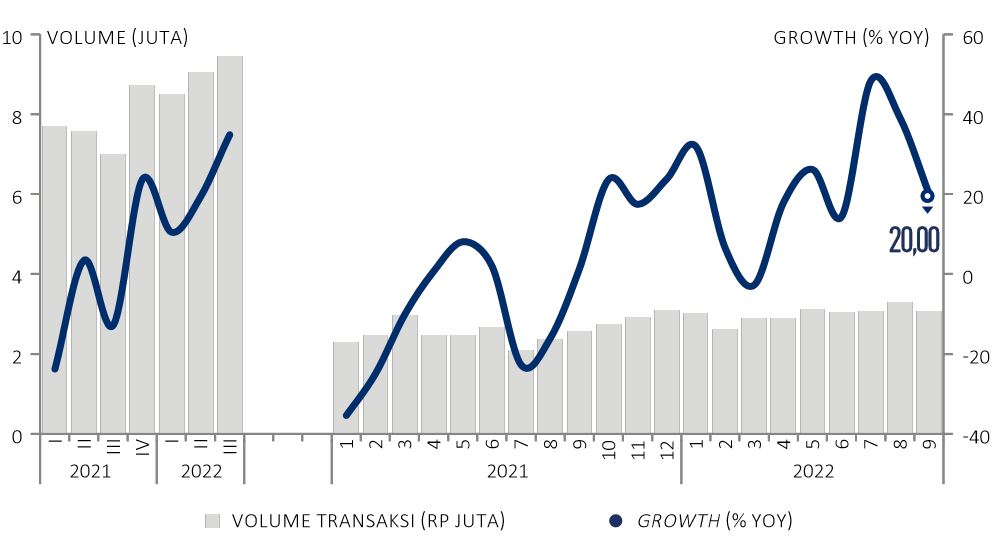Namun demikian, perbaikan yang terjadi pada APMK Kartu ATM Debit dan penggunaan APMK Kartu Kredit, serta UE yang masih menunjukan pertumbuhan positif, mengindikasikan semakin kuatnya akseptansi dan preferensi masyarakat terhadap transaksi non tunai.
Perkembangan Nominal Transaksi Uang Elektronik

Perkembangan Volume Transaksi Uang Elektronik

Transaksi E-Commerce
Penurunan konsumsi pada triwulan III 2022 juga terkonfirmasi dari penurunan transaksi di e-commerce sejalan dengan adanya normalisasi aktivitas ekonomi masyarakat pasca HBKN Idul Fitri.
Transaksi E-Commerce
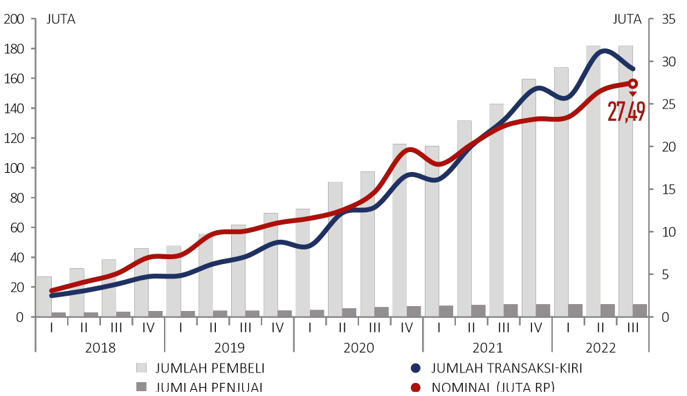Pangsa Metode Pembayaran E-Commerce
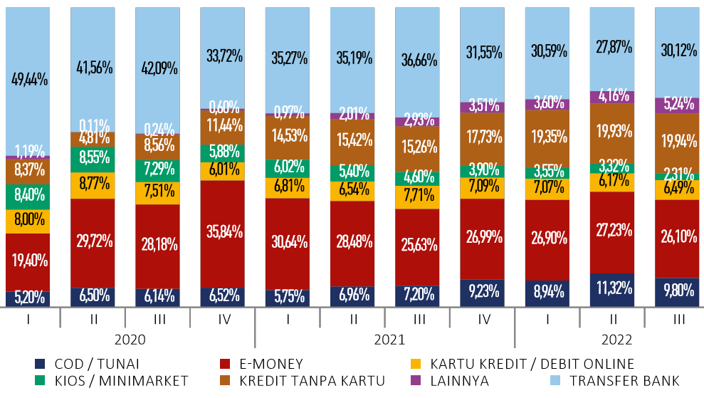Transaksi QRIS
Dari sisi transaksi QRIS pada triwulan III 2022, baik secara volume maupun nominal, mengalami peningkatan dibandingkan periode sebelumnya.
Nominal Transaksi QRIS

Volume Transaksi QRIS
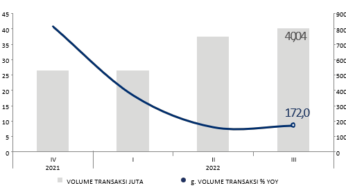Meningkatnya transaksi dan penetrasi QRIS ini menunjukan bahwa akseptansi digitalisasi di kalangan masyarakat Jawa Barat semakin kuat sehingga menjadi peluang untuk terus memperluas digitalisasi daerah dalam mewujudkan Jabar Digital Province.
Jumlah Merchant QRIS secara Spasial

Jumlah Merchant QRIS secara Skala Usaha

Upaya Menjaga Kelancaran Sistem Pembayaran
×Sosialisasi dan Implementasi Penggunaan Sistem Pembayaran Non Tunai
Dalam rangka mensukseskan penggunaan Sistem Pembayaran Non Tunai, Bank Indonesia terus mendorong peningkatan transaksi sistem pembayaran non tunai di Indonesia.
Implementasi Bantuan Sosial Non Tunai
Dalam rangka mendukung kesuksesan perluasan implementasi penyaluran Bantuan Sosial Non Tunai (BSNT) yaitu Bantuan Pangan Non Tunai (BPNT)/Program Sembako serta Program Keluarga Harapan (PKH), Kantor Perwakilan Bank Indonesia Provinsi Jawa Barat senantiasa melakukan monitoring dan evaluasi perluasan penyaluran BSNT di Jawa Barat.
Penyerapan BPNT (KPM)
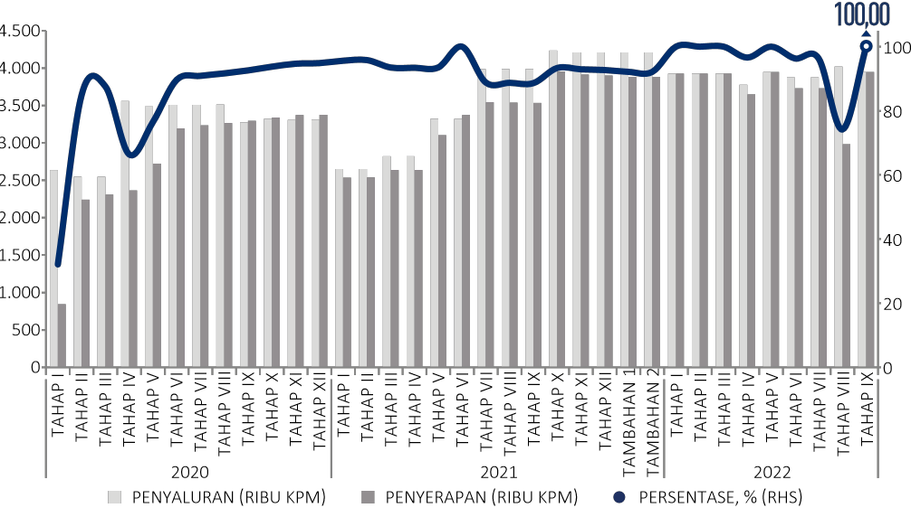Penyerapan BPNT (Nominal)

Penyerapan PKH (KPM)

Perkembangan Kegiatan Penukaran Valuta Asing-Bukan Bank (KUPVA BB) dan Penyedia Jasa Pembayaran Layanan Remitansi Bukan Bank (PJP LR BB)
×Perkembangan KUPVA BB
Jumlah valuta asing yang ditransaksikan penyelenggara KUPVA BB di wilayah Kantor Perwakilan Bank Indonesia Provinsi Jawa Barat pada triwulan III 2022 sebanyak 34 jenis mata uang. Pada triwulan III 2022, nilai transaksi KUPVA BB di Jawa Barat masih menunjukkan adanya kenaikan.
Jenis Mata Uang Penjualan Valas
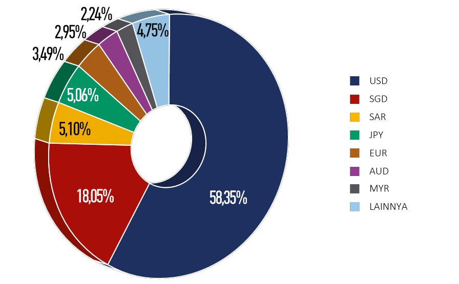Jenis Mata Uang Pembelian Valas

Bank Indonesia aktif mendorong kelancaran dan keamanan penyelenggaraan sistem pembayaran pada KUPVA BB.
Transaksi Penjualan Valas di KUPVA BB

Transaksi Pembelian Valas di KUPVA BB

Perkembangan Transaksi Transfer Dana di Jawa Barat
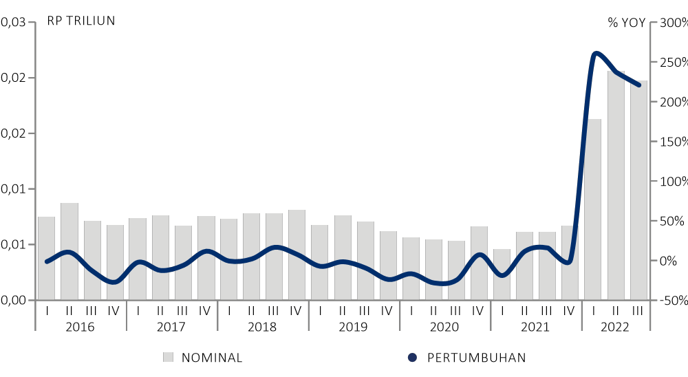Perkembangan Volume Transfer Dana di Jawa Barat

Salsa
Kinan
Fikri
Azis
Evan
Reski